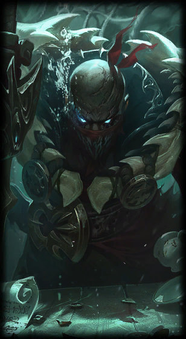

Pyke
the Bloodharbor Ripper
Class :
Support, Assassin
Lore :
A renowned harpooner from the slaughter docks of Bilgewater, Pyke should have met his death in the belly of a gigantic jaull-fish… and yet, he returned. Now, stalking the dank alleys and backways of his former hometown, he uses his new supernatural gifts to bring a swift and gruesome end to those who make their fortune by exploiting others—and a city that prides itself on hunting monsters now finds a monster hunting them.
Stats :
| Health | Health per level | Mana | Mana per level | Movement speed | Armor | Armor per level | MR | MR per level | Range | HP regen | HP regen per level | Mana regen | Mana regen per level | Crit | Crit per level | AD | AD per level | AS per level | AS |
|---|---|---|---|---|---|---|---|---|---|---|---|---|---|---|---|---|---|---|---|
| 600 | 90 | 415 | 50 | 330 | 45 | 3.5 | 32 | 1.25 | 150 | 7 | 0.5 | 8 | 1 | 0 | 0 | 62 | 2 | 2.5 | 0.667 |

Passive : Gift of the Drowned Ones
When Pyke is hidden from enemies, he regenerates damage that he has recently taken from champions. Pyke also cannot gain extra Maximum Health from any source, and instead gains Bonus AD.